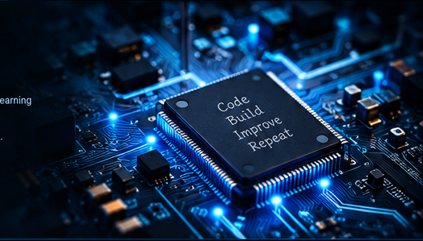

Stefan Software Developer
C# / C++ / Python | Embedded Systems | Machine Learning
Ich entwickle robuste und effiziente Softwarelösungen – von Desktop-Anwendungen bis hin zu Embedded-Systemen. Technik, die funktioniert und Spaß macht.
stefseyer@gmail.com
Germany

Technologien & Tools
Die Werkzeuge, mit denen ich arbeite und experimentiere.
C#
C/C++
Python
WPF
Machine Learning
Git
Visual Studio
Linux
Featured Projects
Meine Repositories
Alle öffentlichen Repositories werden automatisch von GitHub geladen.
Initialisiere GitHub-Verbindung …
GitHub Stats
—Repositories
—Stars (gesamt)
—Forks (gesamt)
—Contributions
Contribution Graph
JanFebMärAprMaiJunJulAugSepOktNovDez
WenigerMehr